CryptInc
Project Overview
Co-op horror puzzle game designed for up to 4 players.
In Crypt Inc., players collaborate to investigate supernatural occurrences, using specialized equipment to find and analyze evidence to identify cryptids. Once identified, players coordinate to capture the cryptid while surviving. The game emphasizes teamwork, strategy, and replayability through randomized objectives, clues, and enemy encounters.
My Role
As the Development Lead and Multiplayer Architect, I was responsible for designing and implementing the entire multiplayer backend, integrating Steamworks with Mirror, and ensuring all systems were properly networked and synchronized across clients.
- Designed the server-authoritative networking architecture for player actions, spawns, and state replication.
- Implemented multiplayer systems for equipment, clues, cryptids, and scoring with full network synchronization.
- Integrated Steamworks for lobby management, player identification, and session persistence.
- Ensured reconnection flows and spectator mode worked seamlessly for players mid-match.
- Coordinated team efforts to maintain consistent, deterministic gameplay across all clients.
The primary goal was to make cooperative gameplay feel smooth, responsive, and fair while maintaining a high degree of replayability and dynamic interaction.
Key Technical Highlights
- Steam Lobby & Matchmaking System: Fully integrated Steam + Mirror system for lobby creation, searching, joining, and metadata synchronization. Async and event-driven architecture keeps UI responsive while bridging Steam matchmaking with server/client networking.
- Seamless Reconnect System: Fault-tolerant player reconnection using Mirror + Steam Cloud. Periodic caching and server validation restore player state after crashes, disconnects, or host failures without gameplay disruption.
- Networked Equipment System: Server-authoritative base class for all items. Handles ownership, SyncVar state replication, client authority, and reconnect-safe restoration for consistent multiplayer equipment handling.
- Equipment Manager & Hotbar UI: Fully networked inventory system separating gameplay (server-authoritative EquipmentManager) from UI (Hotbar). Commands and ClientRPCs ensure equip, drop, and consumption actions are synchronized across all clients.
- Communication Systems (Text & Voice): Integrated server-authoritative text and voice chat. Alive and spectator channels maintain privacy, while self-mute and Steam display name integration provide robust, consistent multiplayer communication.
Gameplay Highlights
Steam Lobby & Matchmaking System
A fully integrated Steam lobby and matchmaking system built on top of Steamworks and Mirror, handling initialization, lobby creation, joining, searching, and metadata synchronization. Designed to support both event-driven and async workflows while cleanly bridging Steam matchmaking with network session management.
Why it’s done this way
- Separates Steam logic from gameplay/network code for maintainability.
- Event-driven architecture allows UI and systems to react without tight coupling.
- Async lobby searching enables responsive UI without blocking the main thread.
- Custom lobby metadata allows flexible filtering and richer lobby presentation.
- Clean bridge between Steam matchmaking and Mirror networking simplifies host/client flow.
How it works
InitializeSteam()validates environment, initializes Steam API, and registers callbacks.- Steam callbacks (
LobbyCreated,LobbyEnter, etc.) drive all lobby state changes. CreateLobby()stores pending data, then applies metadata once Steam confirms creation.- Lobby metadata (name, host, joinable, password, timestamps) is stored via
SetLobbyData(). Lobbywrapper class fetches and caches live Steam lobby data for UI use.SearchLobbies()applies filters and requests lobby lists from Steam.SearchLobbiesAsync()wraps Steam callbacks inTaskCompletionSourcefor awaitable searches.JoinLobby()connects via Steam ID, whileSteamNetworkBridgemaps it to Mirror networking.LeaveLobby()safely handles host/client teardown and updates joinability state.- Real-time updates via
LobbyChatUpdatekeep player counts and state synchronized.
Code Snippets
InitializeSteam()– Handles Steam API validation, initialization, and callback setup.CreateLobby()+OnLobbyCreatedCallback()– Full lobby creation pipeline and metadata setup.SearchLobbiesAsync()– Async/await wrapper around Steam lobby queries.ApplySearchFilter()– Configurable filtering system for matchmaking queries.Lobby.RefreshData()– Pulls and parses live lobby metadata from Steam.OnLobbyMatchListCallback()– Converts raw Steam results into usable lobby objects.SteamNetworkBridge.OnLobbyJoined()– Connects Steam matchmaking to Mirror networking.LeaveLobby()– Handles host/client teardown and state cleanup.
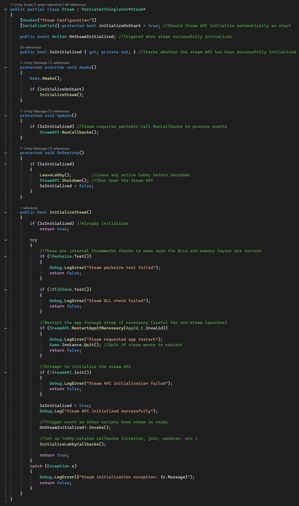
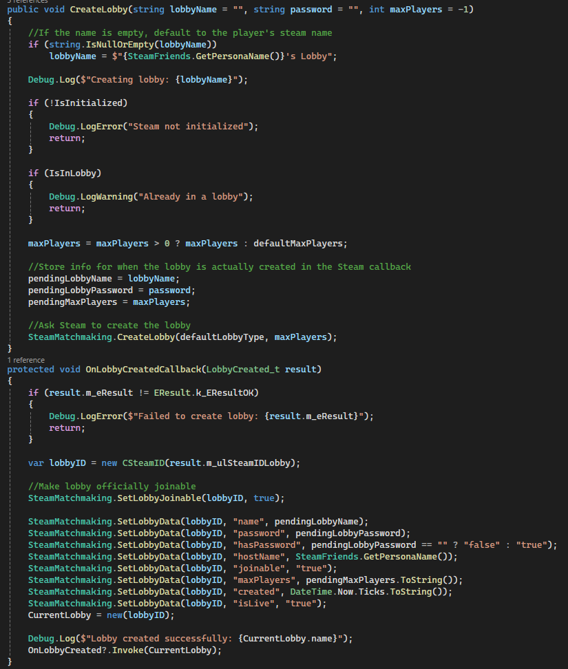
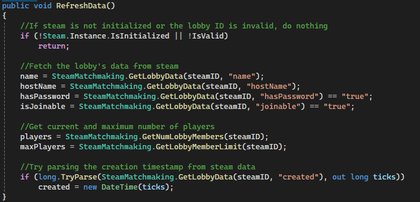
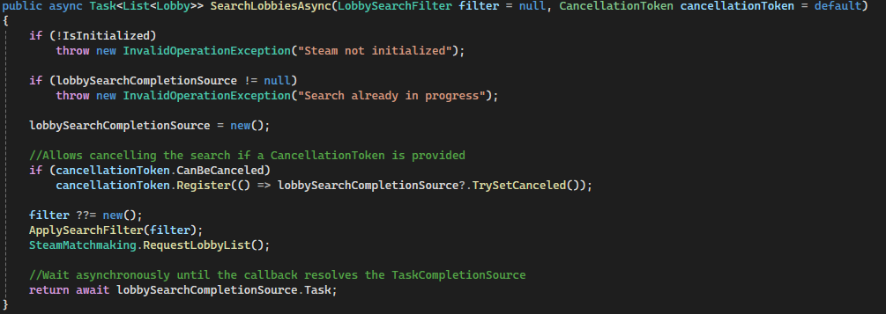
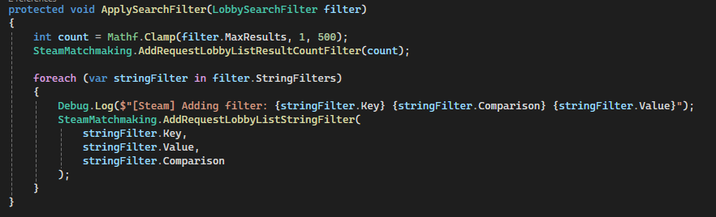
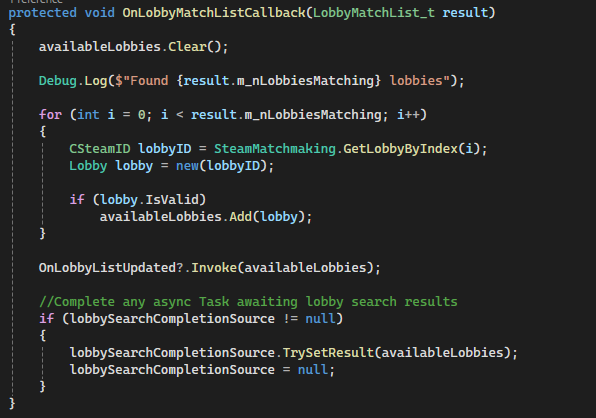
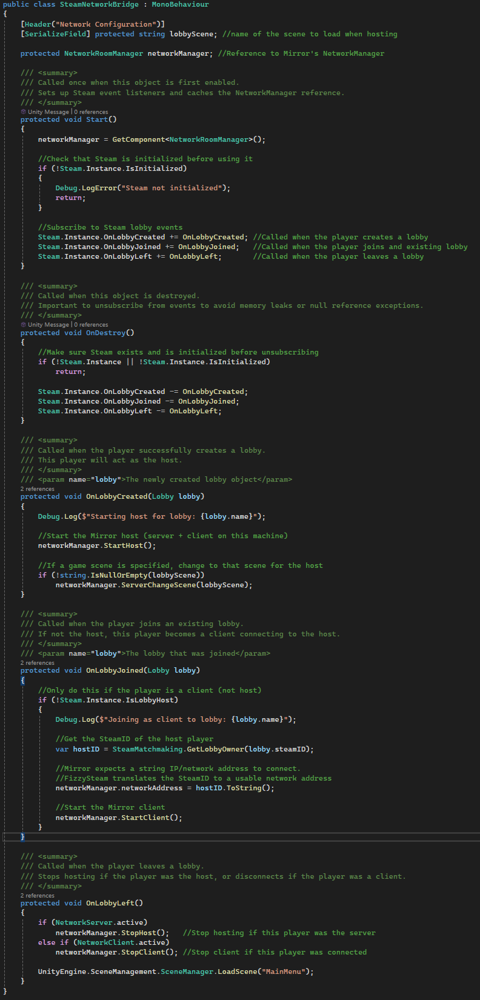
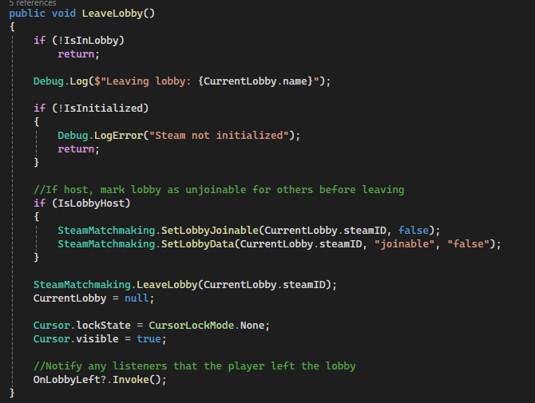
Custom Room Manager & Lobby Flow (Mirror)
A customized multiplayer lobby system built on top of Mirror’s NetworkRoomManager, extended to support player lifecycle control, lobby-to-game transitions, and Steam-integrated UI. Overrides core room manager behavior to handle item cleanup, gameplay transitions, and synchronization between lobby and in-game states.
Why it’s done this way
- Extending
NetworkRoomManagerallows reuse of built-in lobby flow while customizing critical behavior. - Server-authoritative overrides ensure consistent state during joins, disconnects, and scene transitions.
- Separates lobby players (
RoomPlayer) from in-game players for clean state transitions. - Steam integration enables player identity, invites, and external lobby control.
- Provides a controlled foundation for reconnection and session recovery systems.
How it works
NetworkRoomManagermanages two scenes: a lobby (room) and a gameplay scene.OnServerAddPlayer()spawns either aRoomPlayer(lobby) or gameplay player depending on the active scene.- When spawning gameplay players, start positions are assigned and existing world state is synchronized.
RoomPlayerusesSyncVarto replicate Steam usernames across clients.LobbyUIdynamically reflects player readiness and allows toggling ready state via commands.OnRoomServerDisconnect()handles cleanup such as dropping items and updating objectives.OnRoomServerSceneChanged()updates Steam lobby metadata to prevent searching for mid-game lobbies.- Scene transition automatically converts lobby players into gameplay players once all are ready.
Code Snippets
OnServerAddPlayer()– Handles spawning logic for both lobby and gameplay players.OnRoomServerDisconnect()– Cleans up player state and drops equipment on disconnect.OnRoomServerSceneChanged()– Updates Steam lobby joinability when gameplay begins.RoomPlayer (SyncVar + Command)– Synchronizes player identity across clients.LobbyUI.Refresh()– Dynamically builds player list and ready states.ToggleReady()– Sends ready state changes to the server.
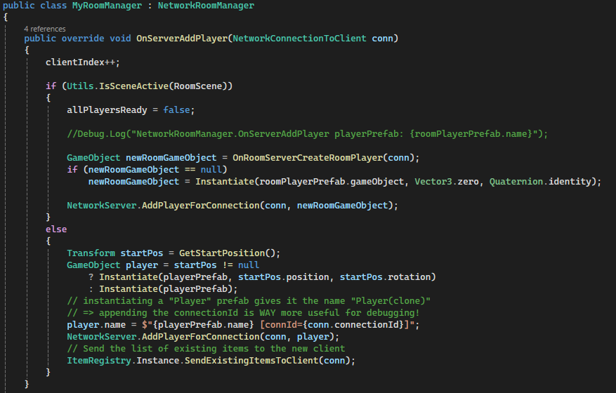
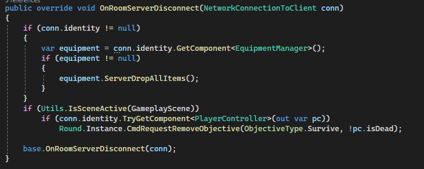
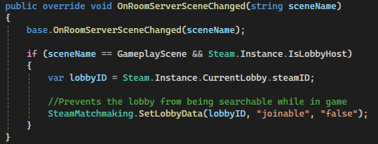
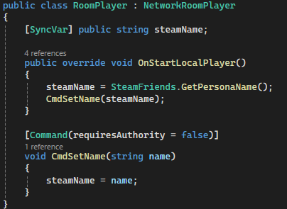
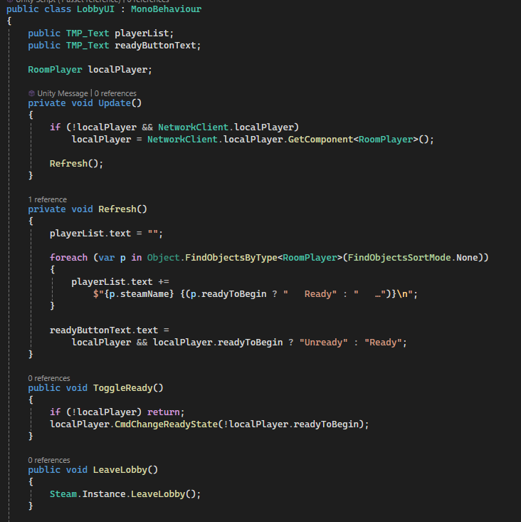
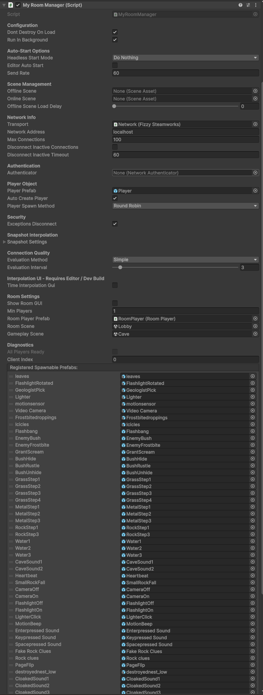
Seamless Reconnect System (Mirror + Steam Cloud)
A fault-tolerant reconnect system that allows players to recover from crashes, disconnects, or connection to host failures and seamlessly rejoin their previous multiplayer session. Player state is periodically cached to Steam Cloud and restored upon reconnection, ensuring minimal disruption to gameplay.
Why it’s done this way
- Steam Cloud storage ensures reconnect data persists across crashes and full application restarts.
- Interval-based caching with an additional save on application quit minimizes data loss.
- Separating systems (
ReconnectManager,DisconnectManager, UI, player restore) keeps responsibilities modular. - Lobby validation prevents reconnecting to invalid or closed sessions.
- Temporarily disabling
NetworkTransformavoids server corrections overriding restored client state.
How it works
ReconnectManagerperiodically serializes player data (position, rotation, state, lobby info) to JSON.- Data is written to Steam Cloud using
SteamRemoteStoragefor persistence. DisconnectManagerdetects unexpected disconnects (including host crashes) and returns the player to the menu.ReconnectUIchecks for cached data on launch and validates the lobby via Steam before prompting the player.- On confirmation, the system rejoins the cached lobby using its SteamID.
- After the player object spawns, cached transform and state are restored locally.
NetworkTransformis temporarily disabled during restore to prevent desync or correction issues.- Reconnect data is cleared after successful restoration or if the session is invalid.
Code Snippets
CachePlayerData()– Serializes player state and writes it to Steam Cloud.AttemptReconnect()– Rejoins the cached Steam lobby using stored lobby ID.OnDisconnected()– Detects unexpected disconnects and triggers return-to-menu flow.ApplyCachedData()– Restores player transform, state, and model after reconnect.NetworkTransform Toggle– Prevents server overwrite during state restoration.ReconnectUI Validation– Confirms lobby is still active before allowing reconnect.
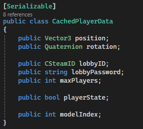
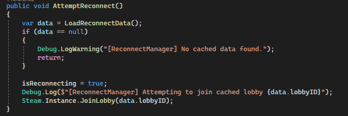
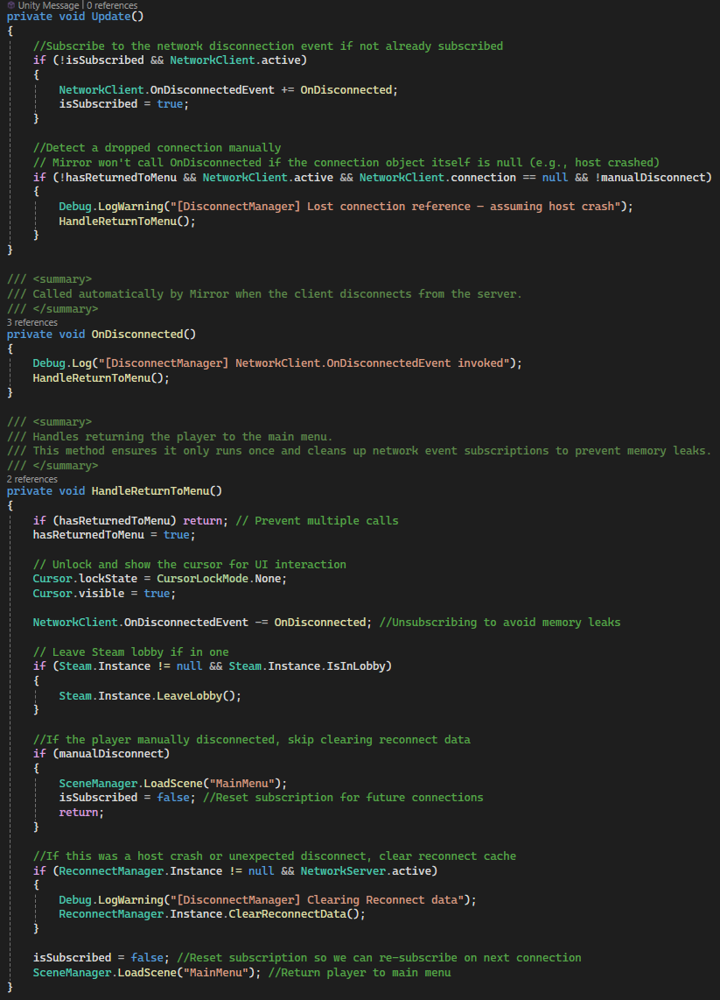
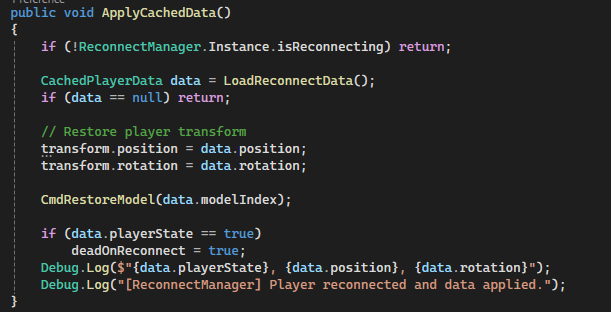
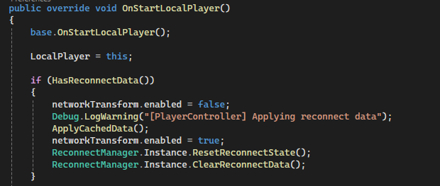
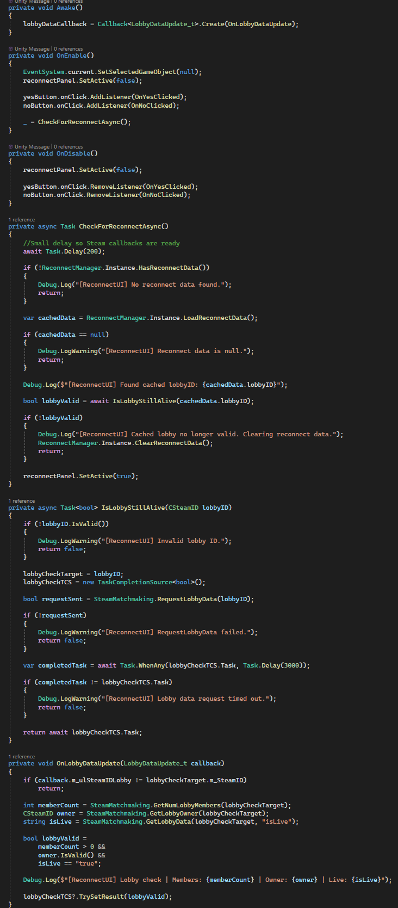
Context-Sensitive Interaction & Prompt System
A flexible, raycast-driven interaction system that dynamically detects objects in front of the player and displays context-aware prompts based on current equipment, object state, and gameplay conditions. Designed to support a wide variety of interactables while remaining scalable and decoupled.
Why it’s done this way
- Centralized raycast detection avoids per-object interaction scripts and reduces overhead.
- Separating detection (
PlayerInteractAndPrompt) from execution (PlayerController) keeps logic modular. - Context-sensitive prompts improve UX by only showing valid actions based on player state and equipment.
- Using interfaces (e.g.,
IBreakable) allows extensible interaction types without tight coupling. - Dynamic input binding strings ensure prompts reflect player-customized controls.
How it works
- A raycast is fired from the center of the player camera each frame within a defined interaction range.
- Detected objects are evaluated in priority order (breakables, equipment, monitors, analyzers, etc.).
- Valid targets are stored on the
PlayerControllerfor later interaction handling. - Prompts are dynamically generated based on object type, state, and currently equipped item.
- Input bindings are retrieved at runtime to match player key rebinds.
PlayerControllerconsumes the detected target and executes the correct interaction via Commands.- If no valid target is found, prompts are hidden to avoid UI clutter.
Code Snippets
UpdateInteractionRaycast()– Core detection loop for all interactable types.ShowPrompt()– Displays context-sensitive interaction messages.GetBindingDisplayString()– Retrieves dynamic input bindings for UI prompts.IBreakable Interface– Enables generic breakable object interactions.HandleInteractPressed()– Routes interaction to the correct system based on detected target.Target Reset Logic– Clears previous targets each frame to prevent stale interactions.
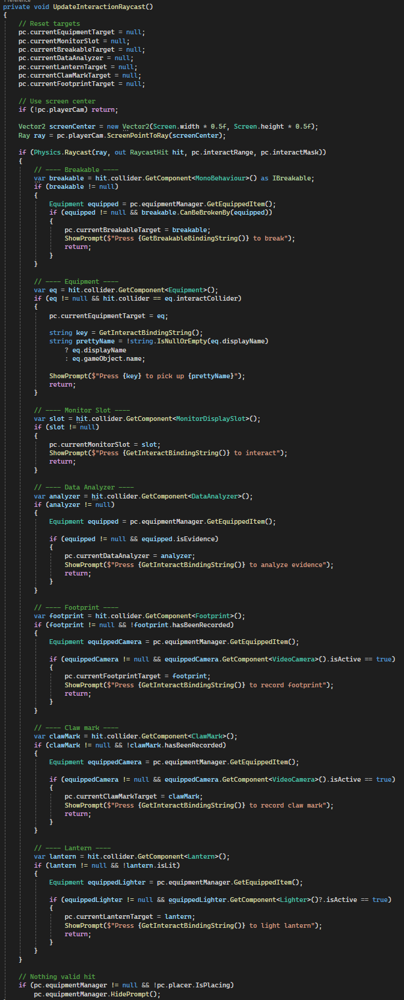
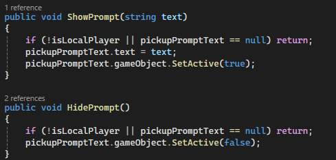
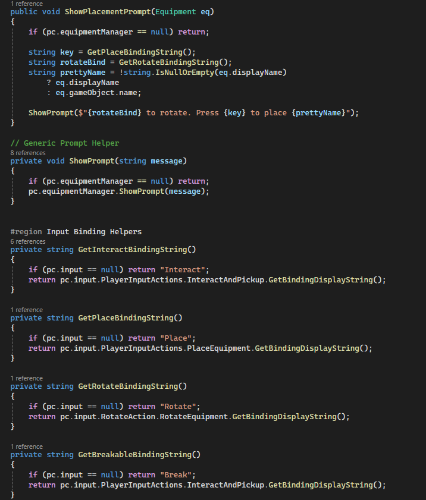
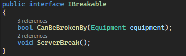
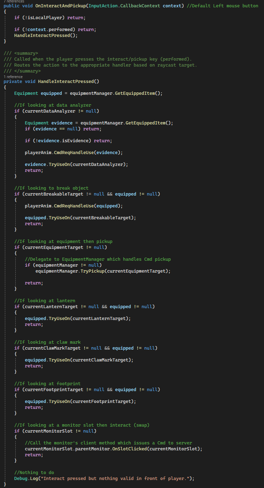
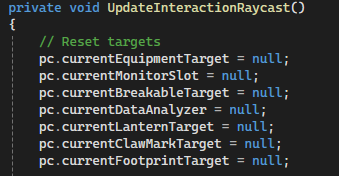
Networked Equipment System (Extensible Base Class)
A server-authoritative equipment system built on top of Mirror, designed as a reusable base class for all in-game items. Handles ownership, synchronization, and lifecycle events while allowing derived classes to implement custom behavior with minimal boilerplate.
Why it’s done this way
- A shared base class standardizes pickup, equip, drop, and activation logic across all items.
- Server-authoritative design ensures consistent state and prevents client-side desync.
SyncVar+ hooks provide automatic state replication without manual RPC overhead.- Authority is dynamically reassigned to the owning player to enable client-driven interactions.
- Virtual methods allow new equipment types to be created rapidly without modifying core systems.
- Reconnect handling ensures equipment state is restored correctly after player reconnection.
How it works
- Players request interactions via Commands (e.g.,
CmdPickup,CmdUnequip), executed on the server. - The server updates ownership (
currentOwner) and state flags (isEquipped,isActive). - Mirror automatically synchronizes these values to all clients using
SyncVar. - Hook methods (e.g.,
OnEquippedChanged,OnStateChanged) trigger client-side visual updates. - Authority is transferred to the owning player, allowing them to control the item locally.
- Physics and colliders are adjusted client-side when equipping/unequipping to match gameplay state.
- Reconnect logic reattaches equipment to the correct player and restores transforms after delays.
Code Snippets
OnPickup()– Assigns ownership and client authority on the server.OnUnequip()– Clears ownership and removes authority safely.DropOnly()– Handles physical item dropping with physics reactivation.[SyncVar] isEquipped– Automatically synchronizes equipment state across clients.CmdToggle()– Base activation command for derived item behaviors.OnEquippedClient()– Client-side hook for enabling visuals and disabling physics.ReconnectEquipRoutine()– Restores item parenting and state after reconnect.
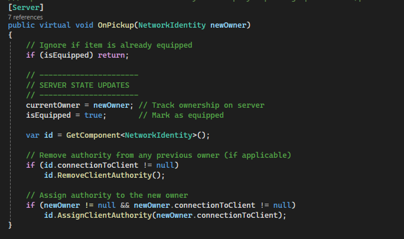
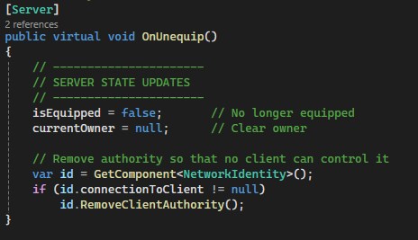
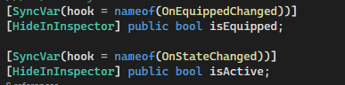
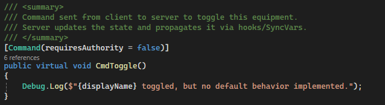
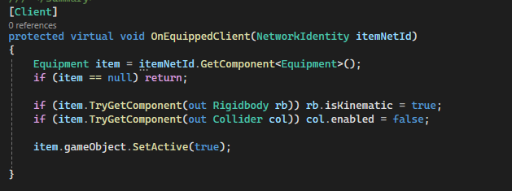
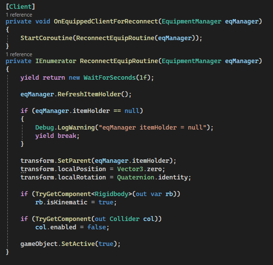
Equipment Manager & Hotbar UI (Server-Authoritative Inventory System)
A fully networked, server-authoritative inventory and equipment system built with Mirror. Separates gameplay logic (EquipmentManager) from presentation (HotbarUI), while ensuring consistent state replication across all clients using Commands and ClientRPCs. Designed to handle equipping, dropping, consumption, and disconnection scenarios reliably.
Why it’s done this way
- Server-authoritative design prevents desyncs and cheating by making the server the single source of truth.
- Clear separation between
EquipmentManager(gameplay) andHotbarUI(visuals) keeps the system modular and maintainable. - Command → Server → ClientRpc flow ensures all clients receive consistent updates for equip, drop, and inventory changes.
SyncVarreferences (equippedItemId) allow lightweight state tracking without over-reliance on RPCs.- Inventory is stored server-side, preventing clients from spoofing or modifying item ownership.
- Built-in handling for disconnection and death ensures items are safely dropped and re-registered in the world.
- HotbarUI remains UI-only, avoiding tight coupling with gameplay logic and allowing easy redesign or extension.
How it works
- Player input calls
EquipmentManager.TryPickup(), which validates locally before sending aCommand. CmdPickupItem()runs on the server, assigns ownership, updates inventory, and setsequippedItemId.- The server then calls
RpcEquipItem()to synchronize the equipped item across all clients. - On each client, the item is parented to the player's
itemHolderand physics/colliders are disabled. - HotbarUI updates only on the local player, reflecting inventory changes without affecting gameplay state.
- Equipping from the hotbar uses
CmdEquipFromHotbar(), repeating the same server-authoritative flow. - Dropping items uses
CmdDropItem(), which applies physics server-side and propagates viaRpcDropItem(). - On death or disconnect,
ServerDropAllItems()ensures all inventory items are safely returned to the world. - Item destruction (consumables) uses delayed server destruction to avoid race conditions with RPC updates.
Code Snippets
TryPickup()– Local validation before sending pickup request to server.CmdPickupItem()– Core server logic for ownership and inventory updates.RpcEquipItem()– Synchronizes equipped item across all clients.CmdEquipFromHotbar()– Server-authoritative re-equipping logic.CmdDropItem()/ServerDropItem()– Handles world drop physics and ownership reset.ServerDropAllItems()– Ensures cleanup on death or disconnect.HotbarUI.AddItem()– UI-only inventory representation with slot rules.HotbarUI.RefreshVisuals()– Centralized visual state updates for hover/equip highlights.
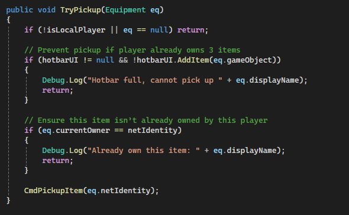
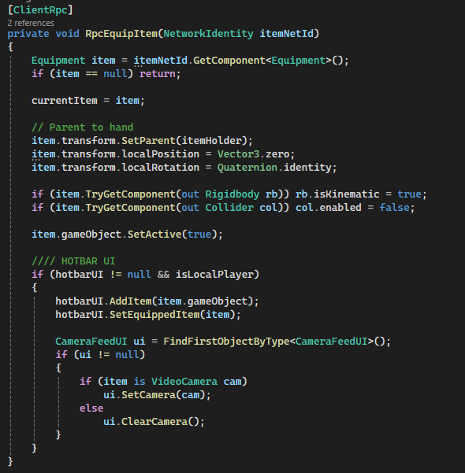
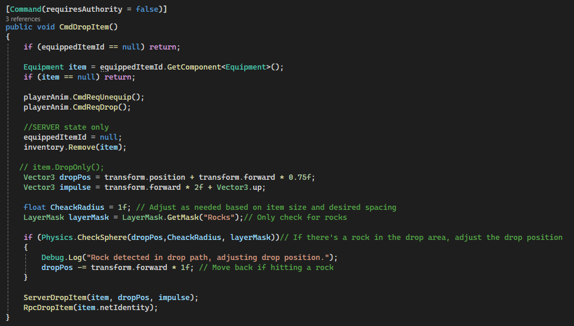
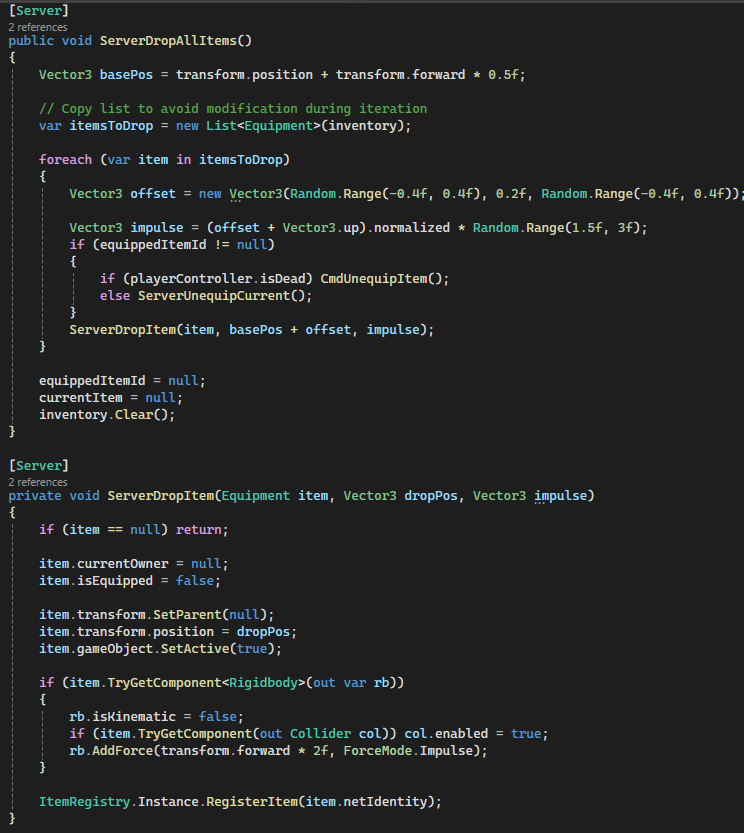
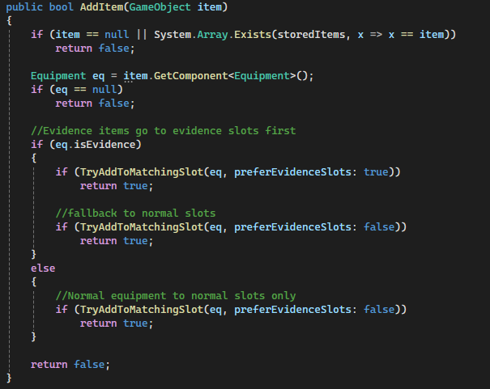
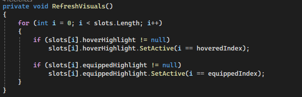
Equipment Placement System (Client Preview → Server Authority)
A networked placement system that allows players to preview, rotate, and place equipment in the world with full server authority. Combines responsive client-side feedback with authoritative server validation using Mirror’s Command → ClientRpc flow.
Why it’s done this way
- Client-side preview provides instant visual feedback without waiting for network round trips.
- Server-authoritative placement ensures consistency and prevents invalid or desynced object states.
- Separating preview logic from actual placement avoids spawning/despawning network objects unnecessarily.
- Each
Equipmentdefines its ownpreviewModel, enabling reusable and scalable placement behavior. - Rotation handled locally keeps input responsive while still syncing final state through the server.
- Physics is explicitly controlled (kinematic + constraints) to guarantee stable placed objects across clients.
How it works
- While holding a placeable item, the client raycasts from the screen center to detect valid placement surfaces.
- If valid,
StartPlacement()instantiates a local-only preview using the equipment’spreviewModel. - The preview updates every frame, snapping to the hit point and applying player-controlled rotation.
- UI prompts are dynamically updated via
PlayerInteractAndPromptto guide placement controls. - When the player confirms placement,
Place()sends aCommandto the server with position and rotation. CmdPlaceEquipment()runs on the server, unequips the item and applies final transform + physics constraints.- The server then calls
RpcPlaceEquipment()to replicate the final placed state to all clients. - Clients apply the same transform and physics locking, ensuring deterministic placement across the network.
- Preview object is destroyed locally after placement, keeping network objects clean and minimal.
Code Snippets
HandlePlacementPreview()– Drives raycast detection and preview positioning.StartPlacement()– Spawns local preview using equipment-defined model.Rotate()– Applies scroll-based rotation to preview object.Place()– Finalizes placement and sends server request.CmdPlaceEquipment()– Server-side placement and physics locking.RpcPlaceEquipment()– Replicates final transform to all clients.
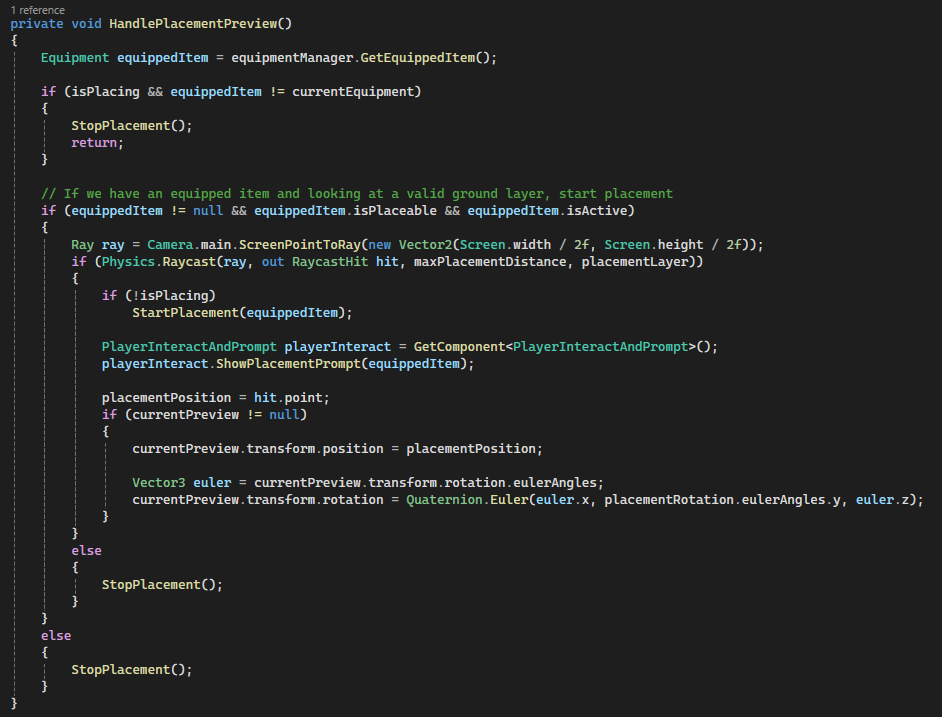
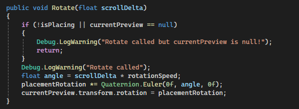
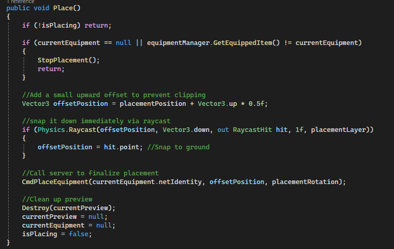
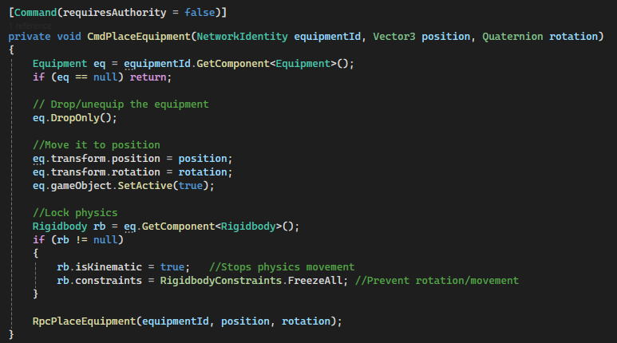
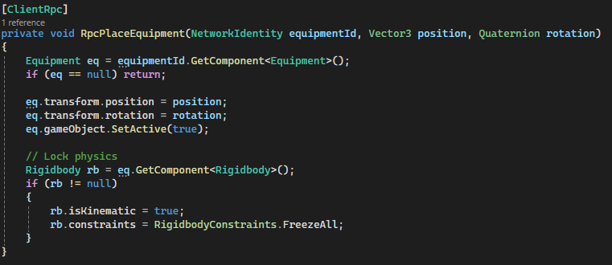
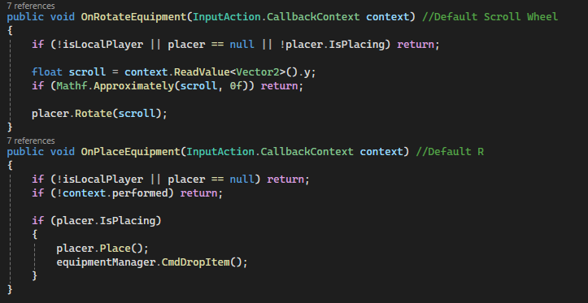
Networked Video Camera System (Live Feeds, Monitor Integration & Night Vision)
A fully networked video camera system that players can deploy, toggle, and use to capture evidence. Cameras stream real-time RenderTexture feeds to in-world monitors and a player UI, with synchronized state across all clients using Mirror. Includes a custom night vision shader and responsive UI feedback.
Why it’s done this way
- Each camera owns its own
RenderTexture, allowing multiple simultaneous live feeds without conflicts. - Using
SyncVarforisActiveensures all clients stay visually consistent when cameras are toggled. - Server-authoritative registration guarantees all monitors share the same camera pool and ordering.
- Decoupling cameras from monitors via
netIdavoids fragile scene references and supports late joiners. - Fallback static textures ensure monitors remain visually stable even when cameras are inactive or missing.
- Custom material instances per screen prevent unintended texture sharing across displays.
- Night vision is implemented as a shader for performance and flexibility instead of post-processing overhead.
- UI is driven by camera ownership and state, ensuring only relevant players see active feeds.
How it works
- On spawn, each
VideoCameracreates a dedicatedRenderTextureand assigns it to its Camera component. - When picked up or spawned, cameras register themselves with the
Monitorsystem (server-side). - The server maintains a
SyncListof all cameranetIds and assigns them to monitor slots. - Each
MonitorDisplaySlotdynamically swaps between a live camera feed or a fallback static texture. - Camera toggling is handled via
CmdToggle(), updatingisActiveacross the network. OnStateChanged()enables/disables rendering, updates textures, and clears inactive feeds.- Monitor interactions allow players to swap camera feeds using server-side Commands.
- A coroutine-based system waits for late-spawned cameras to ensure correct assignment for joining clients.
- The
CameraFeedUIdisplays the active camera feed locally with smooth animated transitions. - Audio feedback (on/off) reinforces camera state changes for player awareness.
Code Snippets
Awake()– Initializes RenderTexture and per-instance materials.RegisterCamera()– Server-side camera registration and slot assignment.CmdToggle()– Networked camera activation toggle.OnStateChanged()– Handles enabling rendering, audio, and texture updates.AssignCameraToSlotWhenReady()– Ensures proper syncing for late joiners.MonitorDisplaySlot.UpdateFeed()– Switches between live feed and static fallback.CameraFeedUI.UpdateVisibility()– Controls UI display and animation.
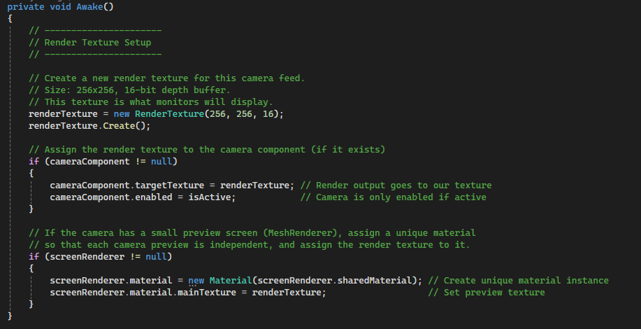
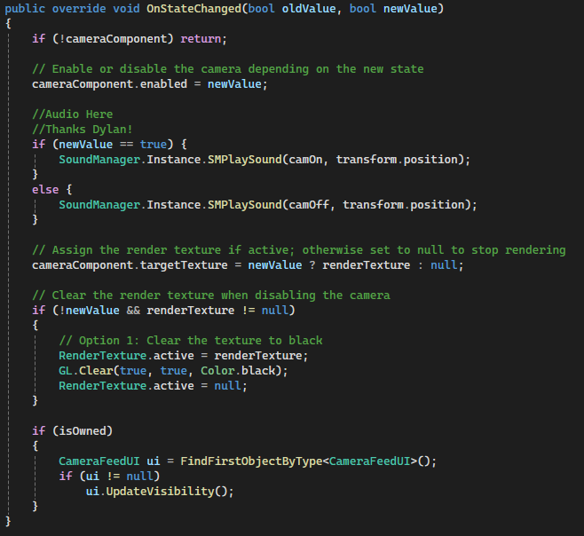
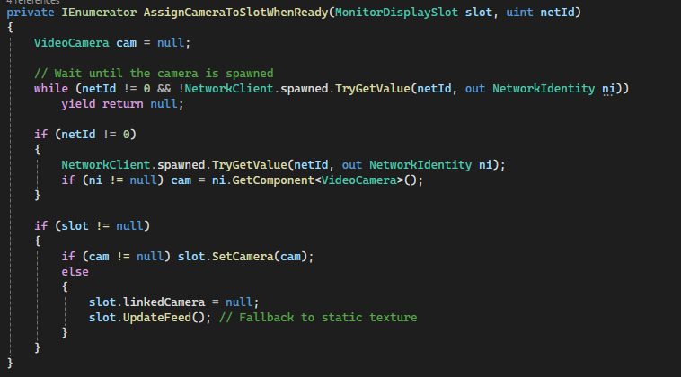
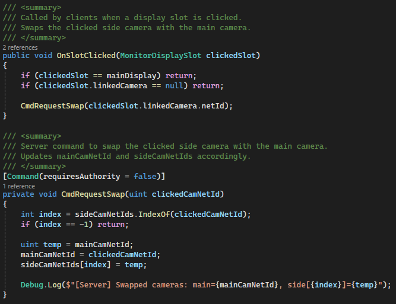
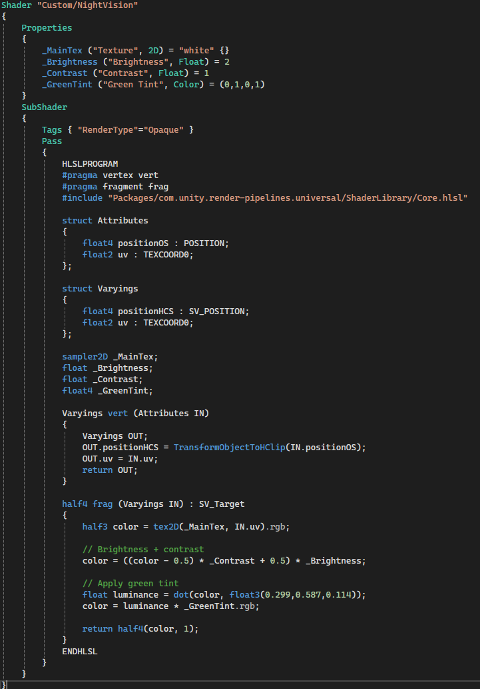
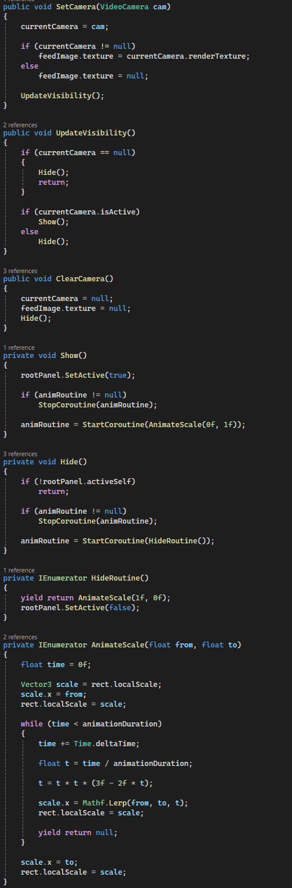
Evidence & Data Analyzer System (Networked Validation & Player Feedback)
A networked evidence validation system where players collect physical clues and analyze them using a shared Data Analyzer device. Combines server-authoritative progression tracking with immediate client-side audiovisual feedback to reinforce correct discoveries and guide player decision-making.
Why it’s done this way
- Evidence objects are treated as
Equipment, allowing reuse of pickup, ownership, and consumption systems. - Validation is triggered through the analyzer rather than the evidence itself, centralizing logic and reducing duplication.
- Server-side Commands ensure evidence results and progression cannot be spoofed by clients.
ClientRpcis used for instant visual/audio feedback across all players, keeping the experience synchronized.MaterialPropertyBlockavoids material instancing overhead while enabling dynamic emission color changes.- Decoupling evidence type (
EvidenceType) from validation logic allows scalable addition of new clue types. - Evidence is consumed on the server to prevent duplication or reuse exploits.
- Feedback system (color + sound) provides clear, readable results without relying on UI-heavy solutions.
How it works
- Players collect
Evidenceobjects, each tagged with anEvidenceTypeand validity (isClue). - When used on a
DataAnalyzer, the evidence callsAnalyzeEvidence(). - A
Command(CmdAnalyzeEvidence) runs on the server to validate the interaction. - The server triggers
RpcPlayResult(), broadcasting the result to all clients. - The analyzer updates its emission color (blue = correct, red = incorrect) using
MaterialPropertyBlock. - Audio feedback is played globally to reinforce the result of the analysis.
- Correct evidence increments a shared counter, allowing progressive feedback (e.g., turning green after enough correct samples).
- If valid, the system notifies the
Roundmanager to track collected evidence for win conditions. - The evidence item is then consumed server-side via
ServerConsumeEquippedItem(). - On pickup, evidence removes itself from the spawner queue to prevent duplicate spawning.
Code Snippets
TryUseOn()– Routes evidence interaction into the analyzer system.CmdAnalyzeEvidence()– Server-side validation entry point.RpcPlayResult()– Synchronizes visual and audio feedback across clients.MaterialPropertyBlockusage – Efficient emission color updates.DestroyEvidence()– Server-authoritative item consumption.OnPickup()– Removes evidence from spawn queue.
Networked Registry System (Player & Item Tracking Across Server/Clients)
A centralized registry system that tracks all active players and items in the game using Mirror’s SyncLists. Provides a reliable, network-synchronized way to query game state from anywhere, supporting gameplay systems, UI, and late-joining clients without fragile scene references.
Why it’s done this way
- Central registries eliminate the need for expensive
Find*calls and scattered references. SyncListautomatically propagates changes (join/leave, spawn/despawn) to all clients.- Server-only mutation ensures authoritative and consistent game state.
- Using
netIdinstead of direct references avoids invalid pointers across the network. - Supports late joiners by reconstructing world state from synchronized IDs.
- Generic access methods (
GetPlayerComponents<T>) make the system reusable across gameplay features. - Decouples systems (UI, cameras, gameplay logic) from direct player/item dependencies.
- Registry pattern scales cleanly as more networked systems are added.
How it works
PlayerRegistrymaintains aSyncList<uint>of all playernetIds.- Players are registered/unregistered on the server as they join or disconnect.
- Clients resolve these
netIds into actual objects usingNetworkClient.spawned. GetPlayerComponents<T>dynamically retrieves components (Transform, scripts, etc.) across all players.- A nested
PlayerInfoclass usesSyncVarto replicate usernames across the network. ItemRegistrytracks all active equipment using aSyncList<NetworkIdentity>.- When a new client joins, the server sends all existing item
netIds via aTargetRpc. - The client reconstructs item state locally by resolving IDs and reactivating objects.
- This ensures late joiners see the correct world state without needing full scene resyncs.
- All systems (UI, monitors, gameplay) can query registries instead of maintaining their own lists.
Code Snippets
Register() / Unregister()– Server-side player tracking.GetPlayerComponents<T>()– Generic system-wide component access.PlayerInfo SyncVar– Networked username synchronization.RegisterItem()– Tracks active networked equipment.SendExistingItemsToClient()– Late join synchronization.TargetSpawnExistingItems()– Client-side reconstruction of world items.
Dynamic Initialization System (Server-Driven Randomization & Replayability)
A server-authoritative initialization system that randomizes core gameplay elements at match start, including player models, enemy type, spawn locations, and evidence distribution. Ensures every session feels fresh while maintaining full network consistency across all clients.
Why it’s done this way
- All randomization is performed on the server to guarantee deterministic and synchronized game state.
SyncVarusage ensures player-specific choices (like models) propagate cleanly to all clients.- Disabling models before assignment prevents visual flicker during network initialization.
- Randomized spawn points increase replayability without requiring additional handcrafted content.
- Separating spawners (
ClueSpawner,EnemyRandomizer) keeps systems modular and scalable. - Using shuffled spawn point lists ensures no overlapping or duplicated placements.
- Supports reconnection flows by avoiding re-randomization when players rejoin mid-session.
- Server-controlled spawning via
NetworkServer.Spawn()ensures all clients receive identical world state.
How it works
- On match start, the server initializes all dynamic systems (
OnStartServer()entry points). ModelSelectorrandomly assigns each player a character model using aSyncVar.- The
OnModelChangedhook applies the correct model and refreshes dependent systems (animation, equipment). EnemyRandomizerselects a random cryptid type and spawn location, then spawns it on the server.ClueSpawnergathers all valid spawn points and shuffles them to ensure randomized placement.- A fixed number of clues and evidence are distributed across unique spawn points.
- All spawned objects are registered via
NetworkServer.Spawn(), syncing them to every client. - Clients automatically receive the initialized state and apply visuals through SyncVar hooks and spawn events.
- Reconnect logic prevents re-randomization, ensuring session continuity.
Code Snippets
OnStartServer()– Entry point for all server-side initialization.selectedModel SyncVar + hook– Player model synchronization.ApplyModel()– Activates correct model and refreshes dependencies.SpawnObjects()– Randomized clue/evidence distribution.SpawnRandomEnemy()– Random cryptid selection and spawn.NetworkServer.Spawn()– Replicates all initialized objects to clients.
Communication Systems (Text & Voice)
A fully integrated in-game communication system, combining text chat and voice chat for alive players and spectators. Ensures real-time interaction, server-authoritative messaging, and player-controlled muting while maintaining network consistency.
Why it’s done this way
- Text messages are server-authoritative (
CmdSendMessage) to prevent desync or cheating. - ClientRpc updates (
RpcReceiveMessage) ensure all clients see messages identically. - Chat UI auto-scrolls and auto-hides after a delay for unobtrusive gameplay.
- Dissonance voice chat separates channels for
Alive(proximity) andSpectator(global), keeping alive players private while spectators can listen. - Self-mute functionality gives players control without requiring push-to-talk.
- Integration with Steamworks provides real player names when available, with fallback to network ID.
- Input system integration ensures smooth toggling between typing, sending messages, and gameplay control.
How it works
- Player opens chat →
PlayerTextChatcaptures input → validates →CmdSendMessage→TextChatUIManager.RpcReceiveMessage. - Chat UI spawns messages dynamically, rebuilds layout, and scrolls to the latest message.
- Voice controller assigns channels based on player state (
SetAlive()vsSetSpectator()). - Self-mute toggling updates both alive and spectator channels instantly and shows a visual mute icon.
Code Snippets
CmdSendMessage(string message, string senderName)– Server-authoritative message relay.RpcReceiveMessage(string sender, string message)– ClientRpc updates all clients’ chat UI.TextChatUIManager.SpawnMessageUI()– Instantiates message prefab, updates layout, auto-scrolls, starts auto-hide.PlayerVoiceController.SetAlive()/SetSpectator()– Dynamically enables/disables voice channels based on player role.PlayerVoiceController.ToggleSelfMute()– Mutes/unmutes all channels and updates visual indicator.
Spectator System (Player-Focused Tracking & UI Feedback)
A spectator system that allows players to observe matches after elimination. The camera is always locked to a player, starting with the spectator's own body, and can cycle through all active players. Integrates UI elements to clearly indicate which player is being observed.
Why it’s done this way
- Camera is always anchored to a player to maintain consistent perspective of in-game action.
- Starting on the spectator's own body provides continuity and prevents disorientation.
- Player cycling allows observers to follow different participants seamlessly.
- Spectator UI clearly shows the currently observed player, improving clarity in multiplayer matches.
- Input system ensures intuitive controls for cycling between players.
- Dynamic player list updates ensure spectators can track all active players in real-time.
How it works
- Activating spectator mode locks the camera to the spectator’s own player model.
- Camera follows each targeted player using a configurable offset for consistent framing.
OnPlayerCycleinput cycles forward or backward through all active players.FollowPlayer()calculates position and rotation relative to the target player only.SnapToNextPlayer()ensures smooth transitions when entering spectator mode or after a player leaves.- Spectator UI updates dynamically to display the name of the currently observed player.
Code Snippets
EnterSpectatorMode()– Locks camera to your body and enables cycling input.FollowPlayer()– Keeps camera positioned and rotated relative to the currently observed player.OnPlayerCycle(InputAction.CallbackContext)– Switches camera to the next or previous player.SnapToNextPlayer()– Ensures proper player focus when starting or updating spectator view.PlayerRegistry.Instance.GetPlayerTransforms()– Retrieves all active player positions for cycling.
Score System (Dynamic Player & Team Performance)
A networked score system that dynamically calculates individual and team performance based on objectives, including cryptid identification, capture, and player survival. Integrates with UI elements to provide immediate feedback and handles post-match continuation through a synchronized “Continue” system.
Why it’s done this way
- Tracks multiple objectives simultaneously, giving players clear feedback on success and contribution.
- Uses multipliers to differentiate score for alive versus dead players, reflecting performance impact.
- UI elements dynamically update to reflect objective completion and team totals.
- SyncVar hooks ensure all clients see consistent score updates in real-time.
- Post-match continue system is networked to prevent desyncs and ensure unanimous player readiness before proceeding.
- Integration with Steam allows host-controlled lobby state and player continuation tracking.
How it works
Score.UpdateScore()calculates player totals based on team objectives and alive/dead status.- Cryptid objectives toggle UI indicators (
crypIdenTrue/False,crypCaptTrue/False). - Mission survival is displayed as a fraction of alive players over total.
- Player total score applies a multiplier based on alive or dead state, updating the
TMP_Textdisplay. ScoreBtnlistens for player “Continue” presses and updates text viaContinueManager.ContinueManager.CmdPressContinue()increments a synchronized count; once all players are ready, the server ends the game or leaves the lobby.- SyncVar hooks and events (
OnContinueUpdated) propagate updates to all clients.
Code Snippets
UpdateScore()– Calculates player score dynamically based on alive status and completed objectives.crypIdenTrue/False, crypCaptTrue/False– Visual indicators of cryptid objectives.missionSurvivalText.text– Displays number of surviving players in real-time.ScoreBtn.OnPressed()– Handles “Continue” button press and communicates with server.ContinueManager.CmdPressContinue()– Tracks which players pressed continue and triggers end-of-game.OnContinueCountChanged()– SyncVar hook that updates all clients when continue count changes.